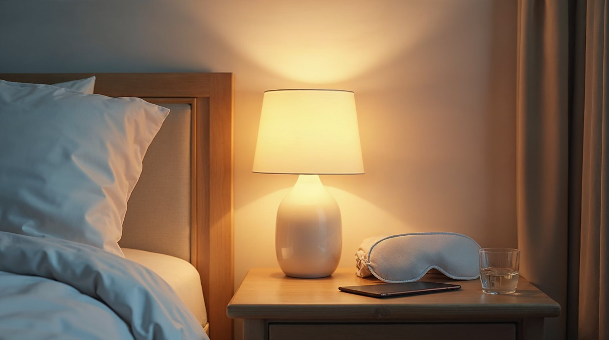
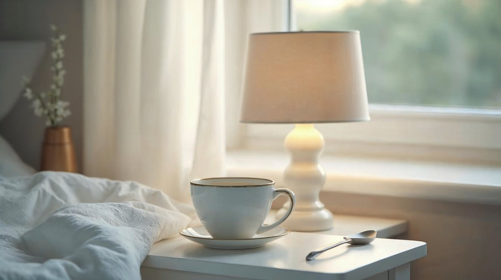
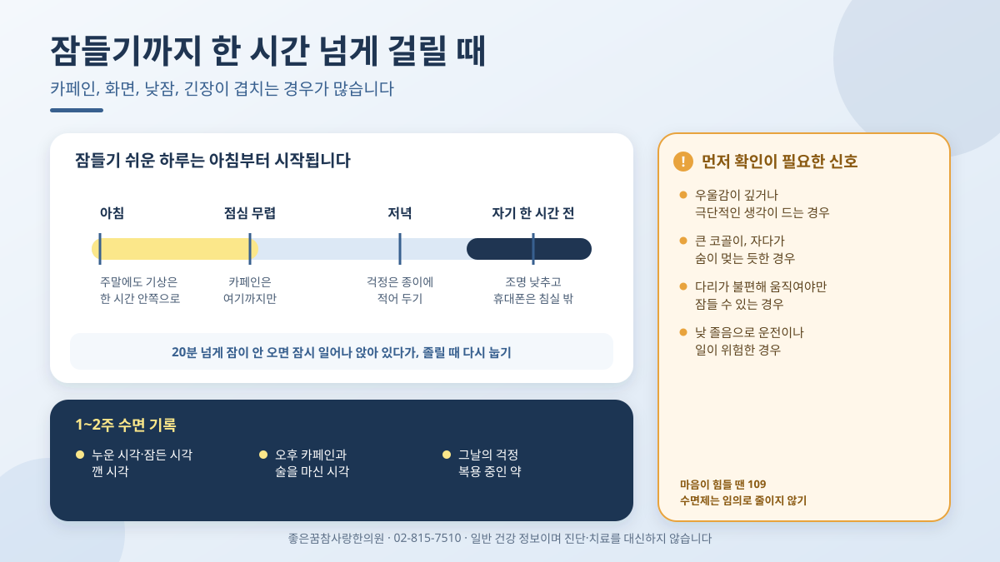

이종호 한의사 감수좋은꿈참사랑한의원 대표원장 (한의사 면허번호 19769)발행 2026-11-22 · 수정 2026-11-26
이 글의 차례
밤 11시 반에 불을 끕니다. 내일은 일찍 나가야 하니 오늘은 꼭 일찍 자야지, 하고 눈을 감습니다. 그런데 십 분이 지나고 이십 분이 지나도 머리가 맑기만 합니다. 오늘 회의에서 했던 말이 떠오르고, 내일 아침 할 일이 줄줄이 따라 나옵니다.
몸을 이쪽으로 돌렸다가 저쪽으로 돌렸다가, 결국 휴대폰을 집어 시간을 확인합니다. 12시 40분. 이제 자도 여섯 시간도 못 자겠구나 싶어 마음이 더 급해집니다.
진료실에서 이런 말씀을 자주 듣습니다. "원장님, 피곤한데 잠이 안 와요. 누우면 오히려 정신이 말똥말똥해져요."
그 말씀을 하실 때 표정을 보면, 잠을 못 잔 것보다 매일 밤 그 시간을 견뎌야 하는 일이 더 지치셨구나 하는 생각이 듭니다. 잠자리에 드는 시간이 하루 중 가장 편안해야 할 때인데, 그 시간이 시험 보는 시간처럼 되어 버린 겁니다. 그동안 얼마나 애쓰셨을까 싶습니다.
저는 잠들기까지 한 시간 넘게 걸린다는 분께 수면 시간을 먼저 묻지 않습니다. 몇 시에 누우시는지, 어떤 날 더 오래 걸리는지, 그리고 낮을 어떻게 보내셨는지를 먼저 여쭙니다. 잠은 밤에 갑자기 오는 것이 아니라 아침부터 조금씩 쌓여서 오는 것이라고 생각하기 때문입니다.
왜 잠이 늦게 오는 밤이 생길까요
잠드는 데 오래 걸린다는 말 하나에도 사정은 사람마다 꽤 다릅니다. 진료실에서 이야기를 듣다 보면 대체로 몇 갈래로 나뉩니다.
첫째는 머리가 꺼지지 않는 경우입니다. 몸은 분명히 피곤한데 생각이 멈추지 않습니다. 오늘 있었던 일을 되감고, 내일 일을 미리 걱정하고, 그러다 잠이 안 온다는 사실 자체가 또 걱정거리가 됩니다. "오늘도 못 자면 어떡하지" 하는 마음이 들기 시작하면 잠은 더 멀어집니다. 잠은 애써서 잡으려 할수록 달아나는 성질이 있어서 그렇습니다.
둘째는 몸이 풀리지 않는 경우입니다. 누워 있는데 어깨가 귀 쪽으로 올라가 있고, 어금니를 꽉 물고 있고, 손발은 차가운데 얼굴은 달아오릅니다. 이런 분들은 "생각이 많은 건 아닌데 몸이 잠잘 준비가 안 된 느낌"이라고 표현하십니다. 하루 종일 쌓인 긴장이 밤까지 내려놓아지지 않은 상태입니다.
셋째는 리듬이 뒤로 밀린 경우입니다. 오후 늦게 마신 커피, 밤 11시까지 이어진 노트북 작업, 주말마다 정오까지 자는 늦잠이 겹치면 몸이 "아직 잘 시간이 아니다"라고 느낍니다. 이분들은 새벽 1~2시쯤 되면 의외로 금방 잠이 드는데, 문제는 그 시각에 자면 아침이 너무 괴롭다는 점입니다.
넷째는 몸의 다른 불편이 잠을 막는 경우입니다. 저녁을 늦게 먹어 속이 더부룩하거나, 누우면 신물이 올라오거나, 허리나 어깨가 아파 편한 자세를 못 찾거나, 다리가 저릿해 가만히 있기 힘든 경우입니다. 이때는 잠보다 그 불편을 먼저 들여다봐야 합니다.
물론 한 분 안에 이 네 가지가 섞여 있는 경우가 훨씬 많습니다. 그래서 저는 어느 하나로 단정하지 않고, 어떤 밤에 더 힘드셨는지를 여쭤 가며 실타래를 풀어 봅니다.
진료실에서 자주 만나는 모습들
이런 분들이 많습니다. 퇴근하고 저녁을 먹고 나면 밤 9시, 그때부터 밀린 일을 노트북으로 마무리하고 11시가 넘어 바로 눕는 직장인입니다. 일을 마치자마자 침대로 가니 머리는 아직 회의실에 있습니다.
이런 경우에는 일을 끝내는 시각을 정해 두고, 잠자리 전 30분은 화면 없이 보내는 것부터 시작해 보시자고 말씀드립니다. 30분이 짧아 보여도 그 사이에 머리가 일에서 빠져나올 틈이 생깁니다.
시험을 앞둔 수험생도 자주 뵙습니다. 오후에 졸음을 쫓으려고 커피를 두세 잔 마시고, 밤에는 공부를 더 하려다 늦게 눕습니다. 그러면 잠은 늦어지고, 아침에는 또 졸려서 커피를 찾습니다. 이 고리는 의지만으로 끊기 어렵습니다.
그래서 저는 공부 시간을 줄이자는 말보다, 마지막 커피를 점심 무렵으로 당기고 일어나는 시각을 먼저 고정해 보자고 권합니다. 일어나는 시각이 자리 잡으면 잠드는 시각도 조금씩 따라옵니다.
어린아이를 키우는 부모님도 많습니다. 아이를 재우고 나면 밤 10시가 넘고, 그제야 비로소 나만의 시간이 생깁니다. 그 시간이 아까워서 휴대폰을 보다 보면 어느새 자정이 넘습니다.
저는 이분들께 그 시간을 없애라고 말씀드리지 않습니다. 하루 중 겨우 숨 돌리는 시간을 빼앗으면 마음이 더 힘들어지니까요. 대신 화면 말고 쉴 수 있는 방법, 예를 들어 따뜻한 차 한 잔이나 짧은 스트레칭, 종이책 몇 쪽 같은 것을 함께 찾아봅니다.
마지막으로, 걱정거리가 생긴 뒤부터 잠이 늦어졌다는 분들도 계십니다. 가족 일, 직장 일, 건강 걱정 같은 것들이지요. 이런 분들은 "낮에는 괜찮은데 누우면 그 생각이 몰려온다"고 하십니다. 낮에는 할 일이 걱정을 덮어 주지만, 불을 끄고 조용해지면 덮개가 사라지는 겁니다.

오늘 밤부터 해 볼 수 있는 순서
거창한 계획보다 하루를 순서대로 다시 보는 것이 도움이 됩니다. 아침부터 밤까지 이렇게 따라가 보세요.
아침에는 일어나는 시각을 먼저 정합니다. 잠드는 시각은 마음대로 안 되지만 일어나는 시각은 정할 수 있습니다. 주말에도 평일과 한 시간 안쪽으로만 차이 나게 해 보세요. 일어나면 커튼을 열고 햇빛을 보시고, 가능하면 아침을 가볍게라도 드시면 몸이 "하루가 시작됐다"는 신호를 받습니다.
낮에는 몸을 조금이라도 움직입니다. 점심 먹고 10분 걷기만 해도 괜찮습니다. 커피는 점심 무렵까지만 드시고 오후에는 따뜻한 물이나 보리차로 바꿔 보세요. 낮잠이 필요하다면 오후 3시 전에 20분 안쪽으로 짧게 주무시는 편이 밤잠을 덜 방해합니다.
저녁은 잠들기 3시간 전쯤 마치는 것이 좋습니다. 늦은 식사는 속을 바쁘게 만들어 누웠을 때 더부룩함을 남깁니다. 식사 뒤 20~30분 천천히 걷는 것도 좋습니다.
걱정이 많은 분이라면 저녁 8시쯤 종이 한 장을 꺼내 오늘 마음에 걸린 일과 내일 할 일을 적어 보세요. 머릿속에 있던 것을 종이로 옮겨 두면, 잠자리에서 그 생각이 다시 올라와도 "이건 종이에 적어 뒀지" 하고 내려놓기가 조금 쉬워집니다.
잠들기 1~2시간 전에는 따뜻한 물로 샤워를 하거나 몸을 담급니다. 몸이 데워졌다가 서서히 식는 과정에서 졸음이 오기 쉬워집니다. 잠들기 한 시간 전부터는 조명을 낮추고 휴대폰은 침실 밖에 두세요. 알람이 필요하다면 휴대폰 대신 작은 탁상시계를 따로 두는 방법도 있습니다.
그리고 잠자리에서는 졸릴 때 눕습니다. 일찍 눕는다고 일찍 잠드는 것이 아니라서, 졸리지 않을 때 누우면 뒤척이는 시간만 길어집니다. 누웠는데 20분 넘게 잠이 오지 않는다 싶으면 잠시 일어나 어두운 곳에 조용히 앉아 계세요. 시계는 보지 마시고요. 다시 졸음이 오면 그때 눕습니다.
처음 며칠은 오히려 잠이 더 줄어든 것 같아 불안하실 수 있습니다. 그래도 침대가 "뒤척이는 곳"이 아니라 "잠드는 곳"으로 다시 기억되려면 이 과정이 필요하다고 저는 말씀드립니다.
이 모든 것을 한꺼번에 하려고 하지 마세요. 하나씩, 이번 주에는 기상 시각만, 다음 주에는 커피 시각까지, 이런 식으로 더해 가셔도 충분합니다. 잘 안 되는 날이 있어도 괜찮습니다. 하루 이틀보다 몇 주의 흐름을 보시면 됩니다.
누웠는데 몸이 굳어 있을 때
생각보다 몸이 먼저 잠을 막는 분들께 제가 자주 드리는 이야기가 있습니다. 누운 채로 내 몸을 한번 훑어보시라는 겁니다. 이마에 힘이 들어가 있지는 않은지, 어금니를 물고 있지는 않은지, 어깨가 베개 위로 들려 있지는 않은지 차례로 살펴보세요. 의외로 많은 분들이 "어, 내가 이렇게 힘을 주고 있었네" 하고 놀라십니다.
알아차렸다면 그 자리에 힘을 한번 꽉 줬다가 툭 풀어 보세요. 어깨를 귀 쪽으로 5초쯤 끌어올렸다가 숨을 내쉬며 떨어뜨리는 식입니다. 주먹도, 종아리도, 발가락도 그렇게 한 번씩 해 봅니다. 숨은 들이쉴 때보다 내쉴 때를 조금 더 길게 가져가 보세요. 넷을 세며 들이쉬고 여섯을 세며 내쉬는 정도면 충분합니다.
손발이 유난히 차서 잠이 안 온다는 분들도 계십니다. 이럴 때는 잠들기 전 발을 따뜻한 물에 10분쯤 담그거나, 얇은 양말을 신고 누웠다가 몸이 데워지면 벗는 방법도 있습니다. 반대로 얼굴과 몸이 달아올라 답답하다는 분은 침실을 조금 서늘하게 하고 이불을 가볍게 바꿔 보세요.
같은 '잠이 안 온다'는 말 안에도 몸이 찬 분과 더운 분의 밤은 이렇게 다릅니다. 제가 진료실에서 손발 온도를 굳이 여쭙는 이유이기도 합니다.

언제까지 지켜보고, 언제 진료를 받으면 좋을까요
생활을 바꿔 보셨다면 적어도 2주는 이어 가며 수면 기록을 남겨 보세요. 누운 시각, 잠든 것 같은 시각, 아침에 일어난 시각 정도만 적어도 충분합니다. 기록을 보면 기분으로 느끼던 것과 실제 모습이 다를 때가 많습니다.
잠들기 어려운 날이 일주일에 세 번 이상, 한 달 넘게 이어지고 낮에도 피곤하거나 집중이 어렵다면 그때는 혼자 버티지 마시고 상담을 받아 보시길 권합니다. 오래 끌수록 "또 못 자면 어떡하지" 하는 걱정이 습관처럼 굳기 쉽습니다.
이런 증상은 먼저 확인이 필요합니다
- 가슴이 심하게 두근거리거나 답답해 숨쉬기 힘든 경우
- 기분이 가라앉아 일상이 어렵거나 스스로를 해칠 생각이 드는 경우
- 스스로를 해칠 생각이 들면 ☎ 109로 바로 연락하세요.
이런 신호가 있으면 한의원보다 가까운 병원이나 응급실을 먼저 찾으세요.
좋은꿈참사랑한의원에 처음 오시면
처음 오시면 저는 잠이 언제부터, 어떻게 흐트러졌는지부터 충분히 듣습니다. 보통 몇 시에 누우시는지, 잠들기까지 얼마나 걸리는지, 커피는 하루 몇 잔이고 마지막은 몇 시인지, 자기 전 한 시간 동안 주로 무엇을 하시는지 여쭙니다. 누우면 생각이 많아지는지, 몸이 굳는지, 둘 다인지도 여쭙고요.
그다음 양손을 내어 달라고 말씀드립니다. 왼쪽 손목과 오른쪽 손목을 차례로 짚으며 맥이 가볍게 닿는지 깊이 눌러야 느껴지는지, 양쪽이 비슷한지 살핍니다. 맥을 짚는 동안에도 이야기는 이어집니다. 식사는 편하신지, 저녁을 먹고 나면 속이 더부룩하지 않은지, 손발이 찬 편인지 몸이 달아오르는 편인지, 대변은 어떤지 여쭙습니다.
잠만 따로 떼어 보지 않고 소화와 몸의 온기를 함께 보는 이유는, 잠이 흔들리는 분들 가운데 이 둘이 같이 흔들리는 경우가 적지 않기 때문입니다. 필요하다고 판단되면 혀를 보거나 배를 살피기도 합니다.
그렇게 들은 이야기를 바탕으로 침이나 한약 상담 등 지금 상태에 맞는 방법을 함께 정합니다. 그리고 진료실을 나서기 전에 집에서 바꿔 볼 한 가지와 다음에 확인할 점을 말씀드립니다. 한 번에 여러 가지를 드리면 지키기 어려우니 정말 한 가지만 고르려고 합니다.
다시 오시면 지난번에 정한 것을 해 보셨는지, 해 보니 어땠는지, 어려웠다면 무엇이 걸렸는지부터 이어서 여쭙습니다.
오실 때 1~2주 수면 기록, 오후 카페인과 술을 마신 시각, 잠들기 어려웠던 날 낮에 있었던 일, 복용 중인 약 이름과 용량을 메모해 오시면 상담이 훨씬 수월해집니다. 꼼꼼하지 않아도 됩니다. 기억나는 만큼이면 충분합니다.
마치며
잠이 늦게 오는 밤을 오래 겪으신 분들은 대개 스스로를 탓하십니다. 내가 예민해서, 내가 의지가 약해서 그렇다고요. 저는 그렇게 생각하지 않습니다. 하루를 열심히 살아 낸 몸과 마음이 아직 내려놓을 준비가 덜 된 것뿐입니다. 그 준비를 조금씩 도와주면 됩니다.
오늘 밤 한 가지만 해 보세요. 휴대폰을 침실 밖에 두는 것도 좋고, 내일 아침 일어날 시각을 정해 두는 것도 좋습니다. 그리고 다음에 저를 만나시면, 그 한 가지를 해 보니 어땠는지부터 들려주세요. 저는 그 이야기를 들으며 손목을 짚겠습니다.
함께 읽으면 좋은 글
- 수면 일기는 어떻게 쓰면 진료에 도움이 되나요?
- 걱정이 많아서 잠이 안 올 때는 어떻게 살피나요?
- 자기 전 목욕은 잠에 도움이 될까요?

먼저 확인이 필요한 신호
- 가슴이 심하게 두근거리거나 답답해 숨쉬기 힘든 경우
- 기분이 가라앉아 일상이 어렵거나 스스로를 해칠 생각이 드는 경우
- 스스로를 해칠 생각이 들면 109로 바로 연락하세요.
왜 잠이 늦게 오는 밤이 생길까요
- 잠드는 데 오래 걸린다는 말 하나에도 사정은 사람마다 꽤 다릅니다.
- 진료실에서 이야기를 듣다 보면 대체로 몇 갈래로 나뉩니다.
진료실에서 자주 만나는 모습들
- 이런 분들이 많습니다.
- 퇴근하고 저녁을 먹고 나면 밤 9시, 그때부터 밀린 일을 노트북으로 마무리하고 11…
오늘 밤부터 해 볼 수 있는 순서
- 거창한 계획보다 하루를 순서대로 다시 보는 것이 도움이 됩니다.
- 아침부터 밤까지 이렇게 따라가 보세요.
자주 묻는 질문
잠이 안 오는 날은 누워서 계속 버티는 게 나은가요?
오래 누워 뒤척이면 잠자리와 긴장이 연결되기 쉬워, 20분 넘게 잠이 오지 않으면 잠시 일어나 어두운 곳에서 조용히 있다가 졸릴 때 다시 눕는 방법을 권합니다.
일찍 누우면 그만큼 일찍 잠들 수 있지 않나요?
졸리지 않을 때 누우면 뒤척이는 시간만 길어지기 쉽습니다. 일어나는 시각을 먼저 고정하고, 밤에는 졸음이 올 때 눕는 편을 권합니다.
수면제를 먹고 있어도 진료받을 수 있나요?
네. 복용 중인 약을 모두 알려 주세요. 약은 임의로 끊거나 줄이지 말고 처방한 의사와 상의해야 합니다.
잠 때문에 왔는데 왜 소화나 손발 온도까지 묻나요?
잠이 흔들리는 분 가운데 소화와 몸의 온기가 함께 흔들리는 경우가 적지 않아, 진맥과 함께 식사, 대변, 손발이 찬지 달아오르는지를 같이 여쭙고 살핍니다.
얼마나 지나야 달라지나요?
변화의 정도와 기간은 사람마다 다릅니다. 잠드는 데 걸리는 시간을 기록하며 생활 리듬을 함께 조정해 갑니다.
좋은꿈참사랑한의원은 재진 때 지난번 이야기부터 이어서 여쭙니다. 진료시간과 예약은 오시는 길에서 확인하세요.
어디서 상담받을 수 있나요?
좋은꿈참사랑한의원은 서울 동작구 만양로2길 2 신성빌딩 3층·5층(서울 동작구 상도동, 7호선 상도역 3번 출구 근처)에 있습니다. 한의사 3명(이종호 대표원장, 조영기 수석진료원장, 정원영 진료원장)이 진료합니다. 진료시간은 평일 09:30~20:00(점심 13:00~14:00), 토·일·공휴일 09:30~15:00이며, 방문 전 전화로 확인을 권합니다. 예약은 네이버 예약, 카카오톡 상담, 전화 02-815-7510로 받습니다.
이 글은 일반적인 건강 정보이며 개인의 진단이나 치료를 대신하지 않습니다. 증상이 있거나 복용 중인 약이 있다면 진료를 통해 확인하세요. 치료 효과는 개인마다 다를 수 있습니다.
작성 기준: 일반적으로 알려져 있는 건강 정보를 참고해 정리했습니다(대표원장 감수). 증상 기록은 1~2주 동안 하루 1회, 비슷한 시간에 적어 오시면 지난 상태와 비교하기 쉽습니다.